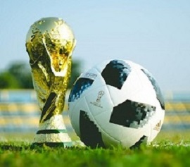

|
|

|
Футбол — командный вид спорта, в котором целью является забить мяч в ворота соперника ногами
или другими частями тела (кроме рук) большее количество раз, чем комманда соперника.
На сегодняшний день футбол является самым популярным и массовым видом спорта, передающий своему
зрителю ту энергию, запал и стремление к победе, которую переживают игроки соревнующихся команд. В
него играют 240 млн. человек, то есть каждый 25 житель Земли. Функционируют 1,5 млн команд и 300
тысяч клубов. Из всех видов спорта футбольные команды приносят больше всего дохода, но и вложения
исчисляются миллиардами. Это способствует развитию данного направления как в городских учебных
учреждениях, так и в стране в целом.
|
|
Есть 17 официальных правил игры, каждое из которых содержит список оговорок и руководящих принципов.
Эти
правила предназначены для применения на всех уровнях футбола, хотя есть некоторые изменения для
таких
групп, как юниоры, взрослые, женщины и люди с ограниченными физическими возможностями. Законы очень
часто формулировались в общих чертах, которые позволяют упростить их применения в зависимости от
характера игры.
|